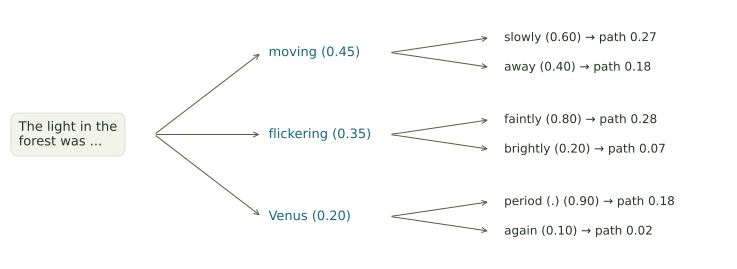

One token changes the next question.
Use a small probability tree to see how recursive text generation branches—and why a likely continuation still needs factual verification.
The output becomes the next input
In the logistic map, a new state is calculated from the current state. A language model also works step by step: it uses the current context to calculate a next-token distribution, chooses a token, appends it, and computes another distribution using the updated context. This is autoregressive generation.
There is a key difference from our logistic calculations. A language model can select a token by probabilistic sampling. Two runs can then branch even from an identical prompt. Under a fixed deterministic decoding procedure, identical inputs and computations give the same output instead.
The light in the forest was…
We will treat each listed word or punctuation mark as one toy token. Actual tokenizers can split text differently. The probabilities below are invented for this exercise; they are not measurements from a particular AI model.

Example · A branch changes the next question
The first distribution gives \(P(\text{moving})=0.45\). After selecting moving, the context ends in “was moving,” and the next distribution gives \(P(\text{away}\mid\text{moving})=0.40\).
The probability of that two-token path is \(0.45\cdot0.40=0.18\). After selecting flickering instead, the next distribution is different because the context is different.
Choose a path or sample it
Choosing a button inspects a branch. Sampling uses the displayed toy probabilities. This experiment does not call an AI service.
The light in the forest was …
Choose a first token, or let the toy model sample one.
Connect the pieces
Does the likeliest first word give the likeliest path?
Use the tree above. To find a two-token path probability, multiply its first-token probability by the probability of the second token given that first token.
Three distinctions to carry forward
- Recursion: the context changes as output is appended.
- Sampling: a random choice can select among possible continuations.
- Verification: the plausibility of a continuation does not establish the truth of its claims.
A change in a prompt can change a later response, but that observation alone does not establish mathematical chaos. Our useful connection here is repeated updating, branching, and the difference between prediction and evidence.
Keep a copy of your work
Your responses save in this browser. To submit them, enter your name above, choose Print completed work / Save PDF, and use the browser’s printer or PDF option. Follow the submission instructions in Canvas.
Technical background, optional: A. Vaswani et al. (2017), Attention Is All You Need, describes an autoregressive decoder whose next output depends on previously generated output.